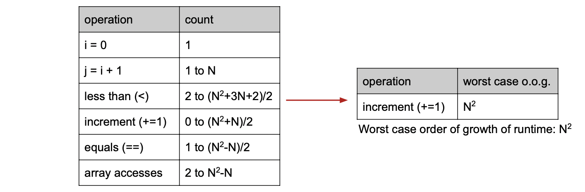
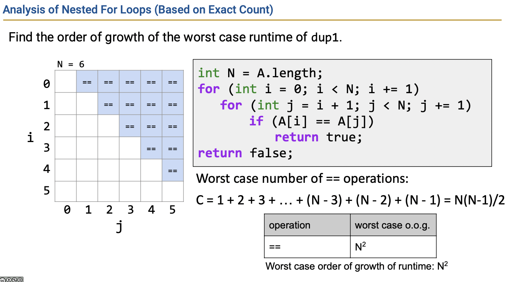
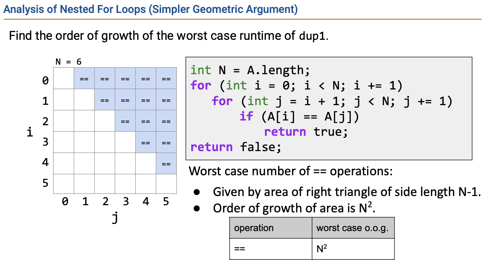

Note: The passage is originally written in Chinese and translated into English via ChatGPT.
Asymptotics
This is a mixed Chinese-English lecture notes for the algorithms section of CS61B. It outlines the main topics covered in the lecture.
General Goal
This section introduces the core question of “how to measure algorithm efficiency.”
-
Efficiency comes in two ways:
- Programming cost <– The focus in the first half of 61B
- Execution cost <– The current focus
- Time cost
- Memory cost
-
The question is raised: How to measure code efficiency?
-
Therefore, the goal of this lecture is to introduce formal standards for measuring algorithm efficiency.
Intuitive Runtime Characterizations
This section provides several intuitive methods to measure program efficiency.
- Comparing execution time The advantage is its intuitiveness, but it is unreliable due to multiple influencing factors.
- Counting the total number of operations (using real numbers/abstract N) The advantage is that it reveals the growth scale (how it scales), but it can be cumbersome to calculate.

Asymptotic Analysis
This section first introduces the extent to which algorithm efficiency is influenced by the order of growth, and then presents methods to simplify asymptotic analysis.
-
The influence of Order of Growth
-
The basic principle is to focus only on the asymptotic behavior when analyzing efficiency (i.e., how it behaves as N tends to infinity).
-
Based on this principle, one can observe the function shape when comparing functions at N tends to infinity.
-
This function shape is temporarily referred to as the order of growth, such as line, cubic, quadratic, etc.
-
In other words, we can measure algorithm efficiency based on the order of growth.
-
-
However, the current method of analyzing growth (symbolic count) is not simple enough and lacks mathematical rigor. Therefore, it needs to be simplified:
- Only consider the worst-case count.
- Choose a representative operation for counting.
- Consider only the term that has the greatest impact on the order, e.g.: n^3~~+n^2+1~~.
- Ignore coefficients.
Simplification/1
-
At this point, the analysis involves 1) computing a complete table, 2) selecting a representative count, and 3) simplification. These steps can be further simplified:
- One way is to directly analyze the code and choose a specific operator for counting.
Approach 1 - Based on exact count
- A simpler approach is geometric analysis (assuming the side length is $N-1$, resulting in $N^2$).
Approach 2 - Simpler geometric argument
Asymptotic Notation
Finally, the commonly used notations for asymptotic analysis, Big Theta (i.e., Order of Growth) and Big O, are introduced.
- Big Theta
Big Theta is used to describe the rate of growth in the running time of a program.
- Notation
Assume there is a runtime function $R(n)$, and if the order of growth (function shape) of $R(n)$ is $f(N)$,
it is denoted as: $$ R(n) \in \Theta (f(N)) $$
- Definition
$$ R(n) \in \Theta (f(N)) $$
means that there exist positive constants $k_1$ and $k_2$ such that $$ k_1 · f(n) \leq R(N) \leq k_2 · f(N) $$ for all $N>N_0$ (i.e., very large N).
- Example
Big Theta describes an “equal” relationship (the growth rate of a function is equal to xx), while Big O describes a “less than or equal to” relationship.
- Definition (Note: it can be observed that it removes the lower bound compared to $\Theta$)
$$ R(n) \in \Theta (f(N)) $$
means that there exists a positive constant $k_2$ such that $$ R(N) \leq k_2 · f(N) $$ for all $N>N_0$ (i.e., very large N).
- Example:
$$ N^3+3N^4 \in \Theta(N^4) $$
$$ N^3+3N^4 \in O(N^6) $$
- Big O vs Big Theta
| Informal Meaning | Family | Family Members | |
|---|---|---|---|
| Big Theta $$\Theta(f(N))$$ | Order of Growth is $f(N)$ | $\Theta(f(N^2))$ | $N^2/2$ $2N^2$ $N^2+38N$ |
| Big O $$O(f(N))$$ |
Order of Growth is less than or equal to $f(N)$ | $O(f(N^2))$ | $N^2/2$ $2N^2$ $lg(N)$ |